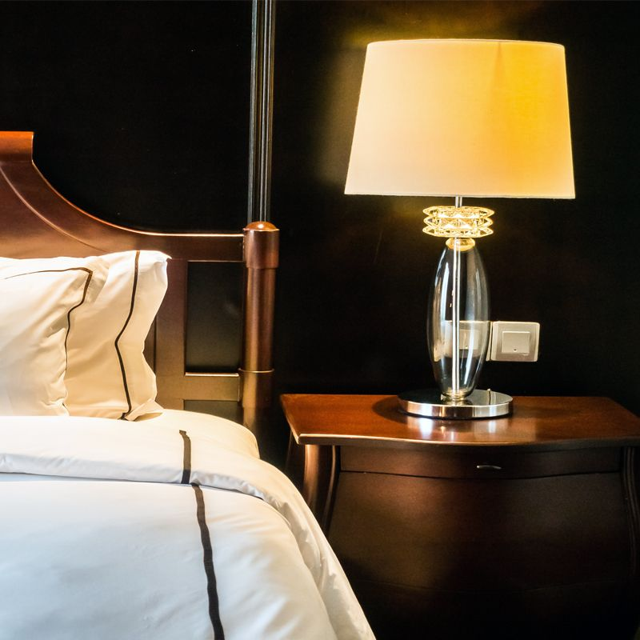
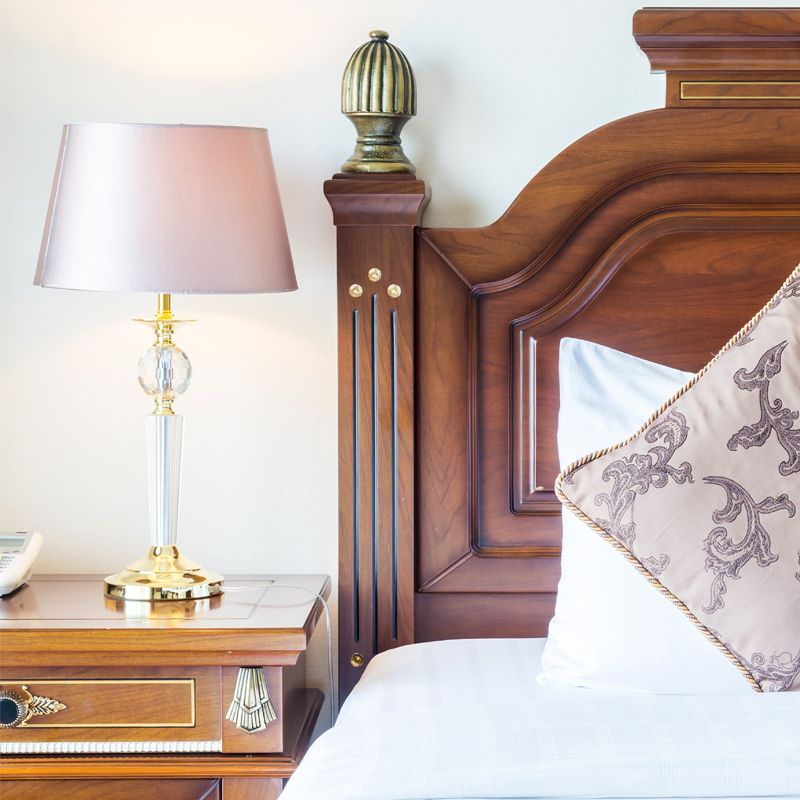
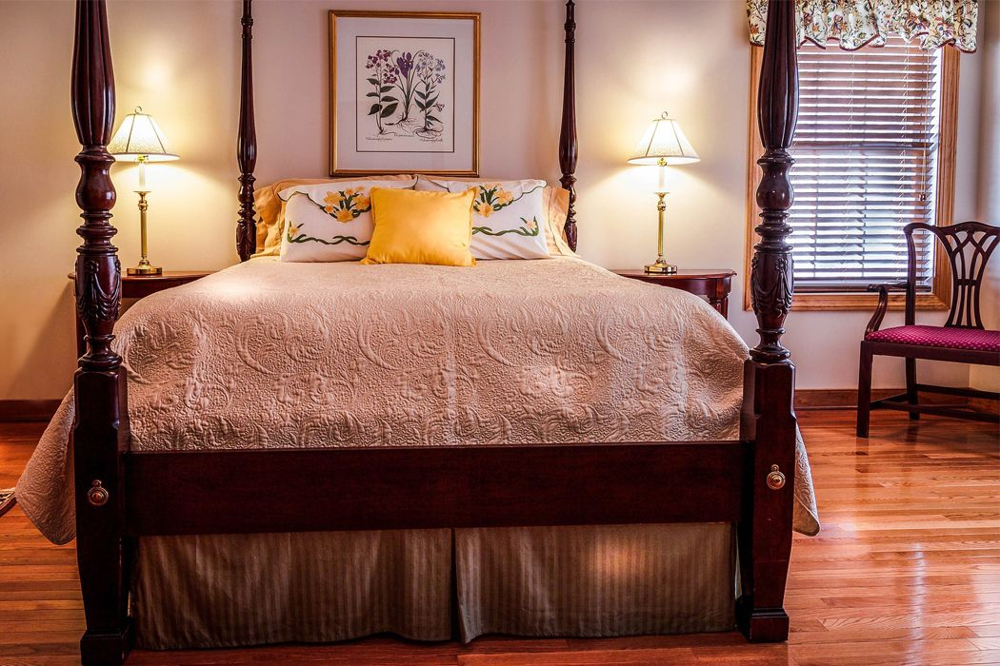
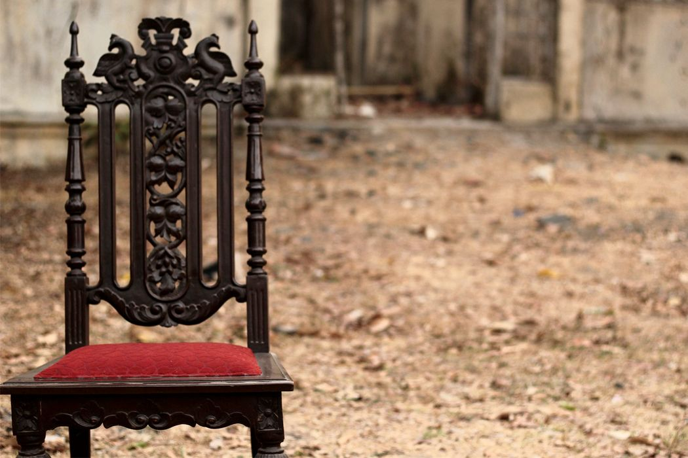
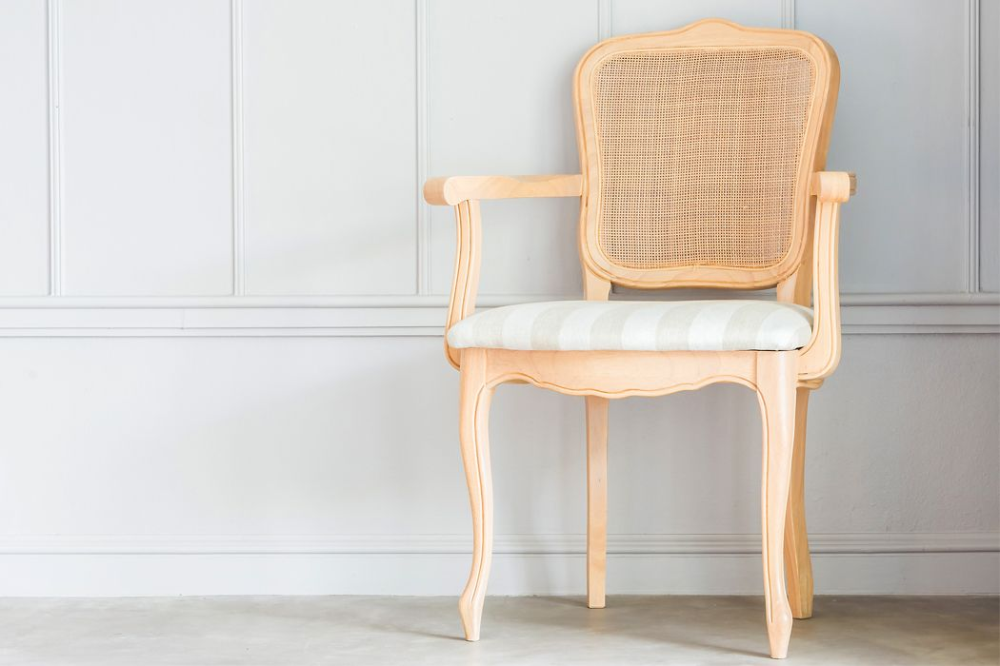
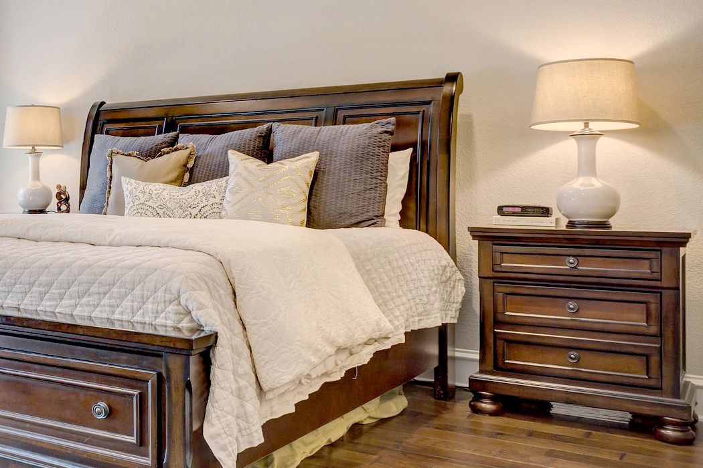
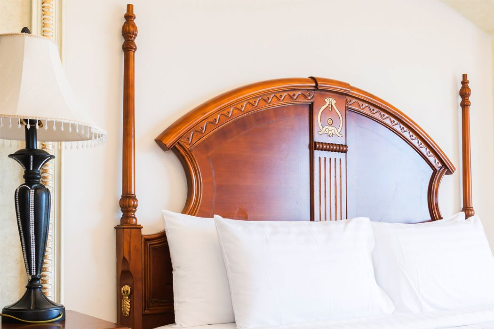
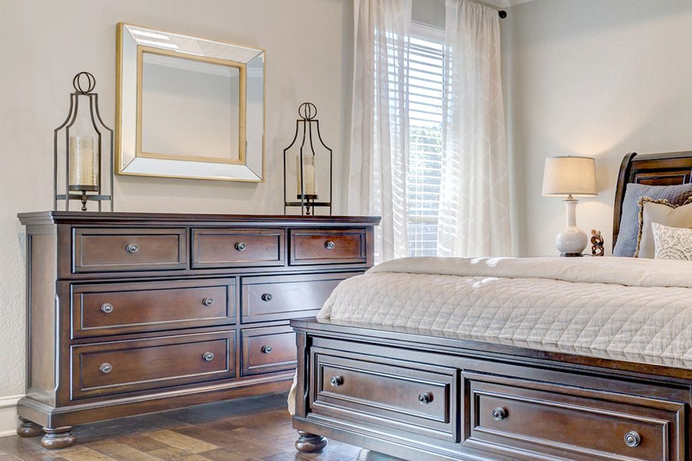

Galerija









Girios baldai jau 20 metų specializuojasi klasikinių baldų gamyboje. Mes gaminame natūraliai sendintus klasikinio stiliaus subtilios prabangos interjerams skirtus baldus. Mūsų produkcija taps didele puošmena klasikos mėgėjo namuose, o moderniame interjere jis pagyvins ir sušildys griežtas šiuolaikinio dizaino linijas. Per du įmonės gyvavimo dešimtmečius ištobulinome savo gamybos technologijas, bei sukaupėme didžiulę patirtį užtikrinančią mūsų gaminių kokybę ir ilgaamžiškumą. Iš rinkos išsiskiriame savo unikalaus dizaino, vienetiniais baldais, kurių projektai individualiai derinami su klientais siekiant pilnai išpildyti jų lūkesčius. Mūsų tikslas atkuriamų įvairių istorinių laikotarpių baldų kokybė, išlaikanti nepaliestą stilistikos nuoseklumą ir baldo istoriškumą. Naujausių informacinių technologijų galimybės ir nuoseklus baldų gamybos istorijos tyrinėjimas leidžia pasiekti puikių darbo rezultatų, derinant istorinę stilistiką, klasikinį grakštumą su griežtais šių laikų reikalavimais.
Klasikiniai baldai – tai natūraliai sendinti klasikinio stiliaus subtilios prabangos interjerams skirti baldai. Iš mūsų įsigytas baldas taps didele puošmena klasikos mėgėjo namuose, o moderniame interjere jis pagyvins ir sušildys griežtas šiuolaikinio dizaino linijas. Baldai puošiami dekoratyvinėmis detalėmis bei inkrustavimu. Naudojamos sendintos bronzos rankenėlės bei vyriai. Rankų darbo raižiniai suteikia baldui autentiškumo ir elegancijos. Mėgstantys prabangą gali rinktis baldus dekoruojamus aukso patina. Baldų spalvai ir sendinimo efektui išgauti naudojame italų firmos ,,Milesija“ apdailos medžiagas, austrų firmos ,,Blium“ ir kitokią furnitūrą. Tai kokybiška, laiko patikrinta produkcija, kuri užtikrina baldo unikalumą, bei ilgaamžiškumą. Klientai gali pasirinkti iš gausios beico spalvų paletės ir skirtingų atspalvių patinos, sukurdami išskirtinį derinį. Išskirtinio dizaino baldai projektuojami atsižvelgiant į kliento norus. Kiekvienas baldas unikalus, pritaikytas asmeniškai jums. Tokie baldai netik puoš ir reprezentuos jūsų interjerą bet ir kartu kurs jūsų namų istoriją.